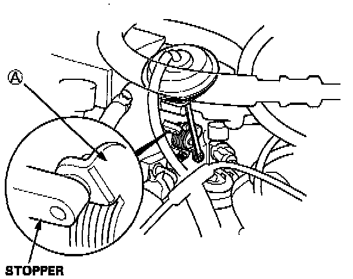
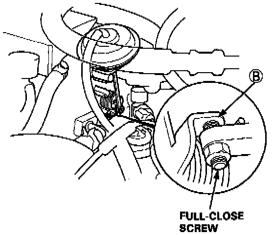

Variable Induction Control Valve: Testing and Inspection
INSPECTIONCAUTION: Do not adjust the Intake Air Bypass valve full-close screw.It was preset at the factory.
1. Check the Intake Air Bypass valve shaft for binding or sticking.
2. Check the Intake Air Bypass valve for smooth movement.

3. With the engine off, check that [A] of the bypass valve is in close contact with the stopper.

4. With the engine at idle, check that [B] of the Intake Air Bypass valve is in close contact with the full-close screw.
- If any fault is found, clean the linkage and shafts with carburetor cleaner.
- If the problem still exists after cleaning, disassemble the intake manifold and check the Intake Air Bypass valve.